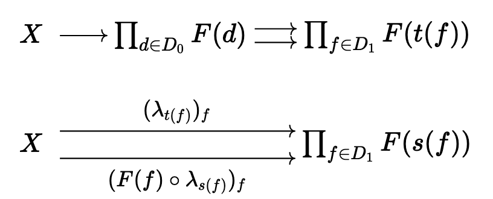
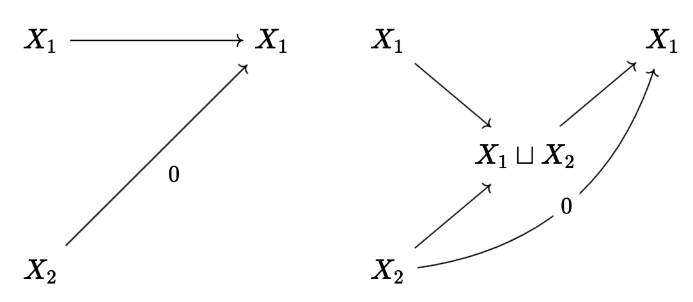
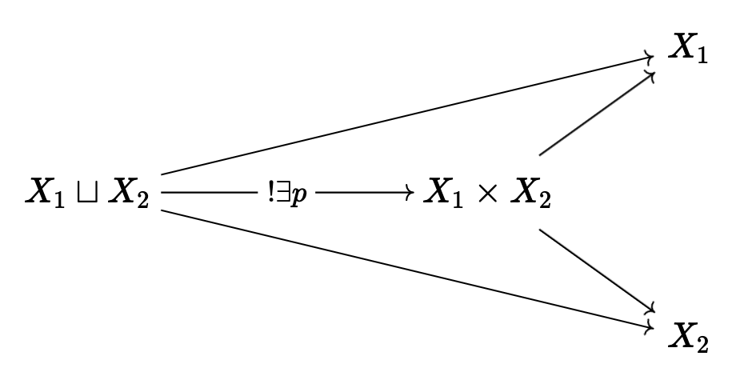
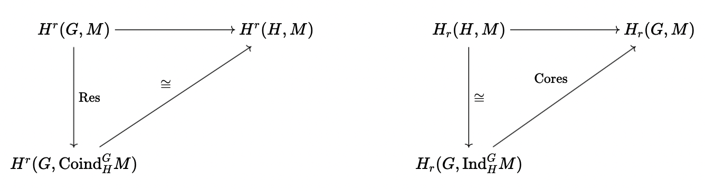
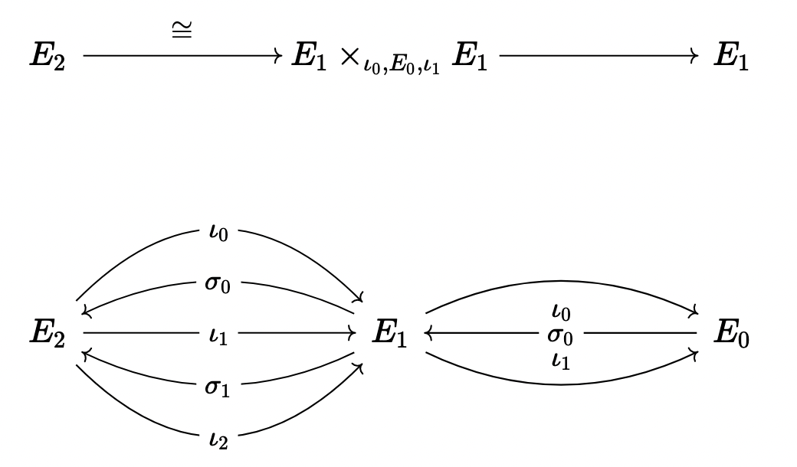
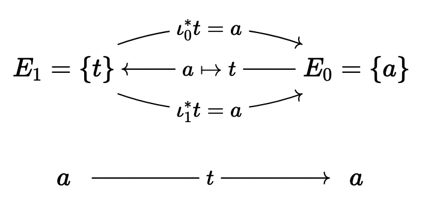
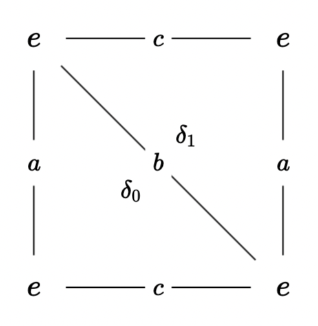

Undergraduate Research 2022
Table of Contents
\( \newcommand{\contra}{\Rightarrow\!\Leftarrow} \newcommand{\R}{\mathbb{R}} \newcommand{\F}{\mathbb{F}} \newcommand{\Z}{\mathbb{Z}} \newcommand{\Zeq}{\mathbb{Z}_{\geq 0}} \newcommand{\Zg}{\mathbb{Z}_{>0}} \newcommand{\Req}{\mathbb{R}_{\geq 0}} \newcommand{\Rg}{\mathbb{R}_{>0}} \newcommand{\N}{\mathbb{N}} \newcommand{\Q}{\mathbb{Q}} \newcommand{\O}{\mathcal{O}} \newcommand{\C}{\mathbb{C}} \newcommand{\A}{\mathbb{A}} \newcommand{\P}{\mathbb{P}} \DeclareMathOperator{\Spec}{Spec} \DeclareMathOperator{\Inv}{Inv} \DeclareMathOperator{\Alt}{Alt} \DeclareMathOperator{\Sym}{Sym} \DeclareMathOperator{\Vec}{Vec} \DeclareMathOperator{\id}{id} \DeclareMathOperator{\Proj}{Proj} \DeclareMathOperator{\Func}{Func} \DeclareMathOperator{\Ker}{Ker} \DeclareMathOperator{\Aut}{Aut} \DeclareMathOperator{\Ob}{Ob} \DeclareMathOperator{\Mor}{Mor} \DeclareMathOperator{\Hom}{Hom} \DeclareMathOperator{\End}{End} \DeclareMathOperator{\Ind}{Ind} \DeclareMathOperator{\Coind}{Coind} \DeclareMathOperator{\colim}{colim} \DeclareMathOperator{\length}{length} \DeclareMathOperator{\Pic}{Pic} \)
1. Introduction
1.1. Stability
Given some objects \(G_n \rightarrow G_{n+1} \rightarrow \dots\), we want to find some invariant, \(G \mapsto \text{Inv}(G)\), satisfying stability: that for sufficiently large \(n\), \(\text{Inv}(G_n) \cong \Inv(G_{n+1})\).
As an example, we can take \(\Inv(G) = G^{ab}\), the abelianization, and if for example \(G_n = GL_n(k)\), then we have stbility for \(n \geq 2\), and similar for the symplectic groups, the special linear groups, etc.
A special case we will discuss in more detail will be the symmetric groups, \(S_n\), the group of bijections from a set of \(n\) objects to itself. In particular, the abelianization sends, for \(n \geq 2\), \(S_n \mapsto \Z/2\Z\); this is appararent from the group representation \[ S_n \cong \left\langle (\sigma_i)^n_{i=1} \mid \sigma_i^2 = 1, \sigma_i\sigma_j = \sigma_i\sigma_i \text{ for } |i - j| > 2, \sigma_i\sigma_j\sigma_i = \sigma_j\sigma_i\sigma_j \text{ for } | i - j| = 1\right\rangle \] Similarly, we can look at the braid groups \(B_n\), which are given by \[ B_n \cong \left\langle (\sigma_i)^n_{i=1} \mid \sigma_i\sigma_j = \sigma_i\sigma_i \text{ for } |i - j| > 2, \sigma_i\sigma_j\sigma_i = \sigma_j\sigma_i\sigma_j \text{ for } |i - j| = 1\right\rangle \] as well as the “pure braid groups”, given by \(\Ker(B_n -> S_n)\); it is clear that the abelianization of \(B_n\) is just \(\Z\).
Furthermore, it will turn out that the abelianization of a group is the same as the first homology group, \(H_1(G)\); the second homology group will be more complication, and will be characterized by \[ H_2(G) = \frac{R \cap [F, F]}{[R, R]} \] where \(G = F/R\), and \(F\) is free.
Theorem (Nakaoka, 1960’s): For \(n \geq 2q\), \(H_q(S_n) \cong H_q(G_{n+1})\); this result was generalized to homological stability, which gives it for a lot of other sequences of groups.
A non-example will be the pure braid groups; we have already
\begin{align*} B_n &\rightarrow \Aut(P_n) \\ t &\mapsto (p \mapsto tpt^{-1}) \\ S_n &\cong B_n / P_n \rightarrow \Aut(H_q(P_n)) \end{align*}so \(H_q(P_n\) should be an abelian group with some \(S_n\)-action. More explicitly, let \(\sigma_{ij} \in B_n\) be the lift of the transposition \((i, j)\), and take \[ P_n = \left\langle (a_{ij})_{i < j} \mid [a_{ij}, -] = 1 \right\rangle \] with the map \(a_{ij} \mapsto \sigma_{ij}^2\). It also becomes clear from this representation that the abelianization of \(P_n\) will be \(\Z^{\oplus \frac{n(n-1)}{2}}\). Furthermore, we have that \[ H_1(P_n) \otimes_\Z \Q \cong \Sym^2(St_n) \] where \(St_n\) is the standard representation.
1.2. Representational Stability
This is our first example of representational stability!
In particular, we define \(\Q-\text{characters of } S_n\) to be the set of class functions of \(S_n\), or all maps to \(Q\) invariant by conjugation.
Then, we can see that \[ \chi_{St_n}(\sigma) = \chi_1(\sigma) - 1 \] and so we conclude that since \(\chi_{\Sym^2}(\sigma) = \frac{1}{2}(\chi(\sigma^2) + \chi(\sigma)^2)\), \[ \chi_{H_1(P_n)} = -\chi_2 + \binom{\chi_1}{2} \]
Theorem (Church-Farb): For \(n\) sufficiently large, \((H_q(P_n))_\Q\) is a polynomial sequence of characters of \((S_n)_n\).
1.3. FI Modules
The category \(FI\) will have objects indexed by \(m \geq 0\), with \(\Hom_{FI}(m, n)\) to be injective maps \([m] \rightarrow [n]\).
In fact, \(H_q(P_n)\) are really functions \(FI \rightarrow Ab\); \(FI\)-modules will be functors \(FI \rightarrow \Vec_\Q\); equivalently, finitely generated \(FI\)-modules will be the same as polynomial sqeuences of representations of \(S_n\).
The thing to care about is the Noetherianity of such categories. We will also consider a little bit of topology, in the sense that we may have some \(FI\)-spaces, which map \(n \mapsto \text{Conf}_n(X)\), the space of injective maps \([n] \rightarrow X\).
For example, \(\text{Conf}_n \C = \{(z_i)\_{i=1}^n \mid z_i \neq z_j\}\), and the fundamental group will be \(P_n\).
Theorem (Church-Eilenberg-Farb): For \(n\) sufficiently large, then \((H_q(\text{Conf}_n(X)))_n\) is a polynomial sequence of \(G_n\)-representations.
Note that for \(n = q = 1\), we have the correspondence \[ H_1(X) = \pi_1^{ab} = H_1(\pi_1) \]
2. Categories
Definition: A category \(C\) is the data of a class \(\Ob(C)\) of objects and
- For each \(X, Y \in \Ob(C)\) a set \(\Hom_C(X,Y)\)
- For each \(X, Y, Z\) a map \(\Hom_C(X,Y) \times \Hom_C(Y,Z) \mapsto \Hom_C(X, Z)\)
- For all \(X \in \Ob(C)\), some identity element \(\id_X\) in \(\Hom_C(X,X)\)
where the morphisms satisfy associativity.
Examples:
- \(Set\)
- \(Gp\)
- For a fixed (associative, unital) ring \(R\), the category of (right) modules over \(R\), \(Mod_R\)
To be more prescise, we make the following definitions:
Definition: A morphism in \(Mod_R\) from \(M \rightarrow N\) is a group homomorphism \(f: M \rightarrow N\) satisfying that \(f(m \lambda) = f(m) \cdot \lambda\).
Example: \(R \cong \Hom_{Mod_R}(R,R)\), where \(a \mapsto (x \mapsto ax)\).
Definition Functors \(C \rightarrow D\) are a collection of data, containing
- For each \(X \in \Ob(C)\), an object \(F(X) \in \Ob(D)\)
- For each \(f \in \Hom_C(X,Y)\), some \(F(f) \in \Hom_D(F(X), F(Y))\), which satisfy
- \(F(fg) = F(f) F(g)\)
- \(F(\id_X) = \id_{F(X)}\)
We can also form now a category of categories, i.e. a 2-category, and so on onto \(n\)-categories.
OK blah blah blah a bunch of the usual category stuff that I’m not typing - adjoints, equivalences, functor categories, etc.
Example: We call the functor category \(\Func(FI, Ab)\), to be the category of \(FI\)-modules.
2.1. Finiteness Conditions
Definition: \(C\) is a small category if its objects are a set, and essentially small if it admits a small skeleton.
Definition: A subcategory \(C'\) of \(C\) is a category with objects a subclass of \(\Ob(C)\) and morphisms a subset of \(\Hom_C(\cdot, \cdot)\). It is called a full subcategory if the inclusion functor \(C' \rightarrow C\) is fully faithful, or equivalently, if \(\Hom_C' = \Hom_C\).
Definition: Finite presentation: See Stacks Project, Tag 00F3.
2.2. Limits/Colimits
Definition: Let \(I\) be a (partially) ordered set; an \(I\)-diagram on \(C\) is a functor \(F: I \rightarrow C\) when \(I\) is considered as a category; a limit of \(F\) is an object of \(C\) that represents the functor \(C \rightarrow Set\), \(X \mapsto \Hom_{\Func(I, C)}((i \mapsto X), F)\); a colimit is the same, but the \(\Hom\) arguments are reversed.
Definition A colimit is filted if \(I\) has finite supremum.
Definition An object \(X\) of \(C\) is compact if \(\Hom(X, -)\) commites with filtered colimit.
Example: In the categories of \(CRing, CAlg, Mod_R, Sets\), etc, compact is the same as finitely presented.
Proof: Let \(B\) be a compact object of \(CAlg\), and let \(I\) the category where the objects \(S \subset B\) finite sets and \(I \subset A[(x_s)]_{s \in S}\) is a finitely generalted ideal of \(A[(x_s)] \rightarrow B\). Then, we let the morphisms be \((S, J) \rightarrow (S', J')\) where \(S \subset S'\), \(J \subset J'\); then, \[ \colim_{(S,J) \in I} A[(\alpha_s)_{s \in S}] / J \cong B \] where we use Yoneda; then use uniervsal property of the colimit and compactness to lift out a finite presentation of \(B\).
Definition Subobject: see nLab, https://ncatlab.org/nlab/show/subobject
Definition Noetherian object: see nLab, https://ncatlab.org/nlab/show/noetherian+object
Definition We say that a category \(C\) is finite if \(\Ob(C)\) is finite and the \(\Hom\)-sets are also finite; similarly, a finite diagram is a functor \(D \rightarrow C\) where \(D\) is finite.
Above, we have a functor from \(C \rightarrow Sets\), which takes \(X \mapsto \Hom_{\Func}(F, (d \mapsto X))\), which is representable iff \(F\) has a colimit.
Example: Equalizers: https://ncatlab.org/nlab/show/equalizer
Lemma: If a category has all equalizers and finite products, then it has all finite limits.
Proof: Let \(F: D \rightarrow C\) be a finite diagram, \(D_0\) the finite set of objects of \(D\), and \(D_1\) the finite set of arrows of \(D\); then we should have \(t, s: D_1 \rightarrow D_0\) that associate each arrow to their target and source.
We want to classify all such \(\lambda_d: X \rightarrow F_d\), for all \(d \in D_0\), such that for all \(f \in D_1\), such that the following commutes:

Then, we claim that by looking at the following diagram,

that \(\lim F\) exists, and is the equalizer.
2.3. Abelian Categories
Definition: A category \(C\) is preadditive when it has the structures of abelian groups of \(\Hom_C(-, -)\), such that composition is bilinear; e.g. in torsion free abelian groups, or in \(Ab\) itself. Further, it is additive if it also has finite products and coproducts.
Note that this implies immediately that an additive category has initial and terminal objects.
Lemma: Let \(C\) be an additive cateogry; then for any \(X_1, X_2\), we have \(X_1 \sqcup X_2 \cong X_1 \times X_2\) functorially in \(X_1, X_2\).
Proof: Let us consider

and

So by reversing arrows we get a map \(q: X_1 \times X_2 \rightarrow X_1 \sqcup X_2\), \(q = \iota_1\pi_1 + \iota_2\pi_2\), where \(\iota, \pi\) are inclusions and projections; then the following diagram can be made to commute:

Definition: The kernel of \(f: X_1 \rightarrow X_2\) in an additive category is the equalizer of \(f_1\) and 0, if it exists; the cokernel is the coequalizer.
Lemma: If \(\iota: K \rightarrow X_1\) is a kernel, then \(\iota\) is a monomorphism.
Definition: An abelian category is an additive category such that all (co)kernels exist (or equivalently, all equalizers and colimits, and therefore the same as all finite limits + colimits), and all epi/monomorphisms are such (co)kernels.
Lemma: If \(A\) is an abelian category amd \(D\) is a small category, then \(\Func(D, A)\) is an abelian category, where the operation is \(F_1 \oplus F_2 = (d \mapsto F_1(d) \oplus F_2(d))\).
Example: \(\Func(FI, Mod_R)\) is an abelian category.
Lemma: Full subcategories of abelian categories are themselves abelian, so long as it contains a zero object, is stable by \(\oplus\), and contains (co)kernels; further, \(B\) preserves (co)kernels.
Disclaimer! We actually need the assumptions; consider \(R = A[x,y]\), and \(A = Mod_R\), and \(B\) the full subcategory of objects \(M\) such that \(M \cong \Ker(M \oplus M \rightarrow M)\), there the first arrow sends \(m \mapsto (mx, my)\) and the second \((a, b) \mapsto am - bm\).
3. Homological Algebra
Definition: A sequence \(X_1 \xrightarrow{f} X_2 \xrightarrow{g} X_3\) is said to be exact (at \(X_2\)) if \(X_1 \rightarrow \Ker(g)\) is an epi.
Definition: We say a functor \(F: A \rightarrow B\) is additive if \(F\) is \(\Z\)-linear on \(\Hom\)-sets and exact if it preserves exact sequences; it also needs to preserve finite products and coproducts, which means that it is equivalent to preserving finite limits and colimits.
Definition: Left/right exact, see Stacks Project Tag 003.
Lemma: If \(F\) is a left adjoint of \(G\), and \(F, G\) are additive, \(F\) commutes with colimits.
Proof: Use Yoneda.
Lemma: Let \(X \in \Ob(A)\), \(A\) an abelian category; then \(\Hom(X, -)\) is a functor \(A \rightarrow Ab\), and it is left exact.
3.1. Projective Modules
Definition: An object \(X\) of \(A\) is said to be projective if \(\Hom(X, -)\) is exact, and dually it is injective if the contravariant Hom is exact. See Stacks Tag 013A for more details.
Lemma: TFAE for \(P \in Mod_R\) projective:
- \(P\) is compact ni \(Mod_R\)
- \(\Hom(P, -)\) commutes with direct sums
- \(P\) is finitely presented
- \(P\) is finitely generated
- \(P\) is a direct summand of a finite free module
Theorem (Quillen): If \(R\) is commutative Noetherian and any projective \(R\)-module is stably free, then the same is true for \(R[t]\).
Theorem (Quillen-Suslind): Any finite projective module over \(k[x_1, \dots, x_n]\) is free (also true over PID).
Lemma: \(k[x]\) is a PID, and for any commutative PID \(R\), TFAE for \(M\) a \(R\)-module:
- \(M\) is a submodule of a free module
- \(M\) is free
- \(M\) is projective
Theorem: Same over local rings, without finiteness conditions.
Proof: See new Matsumura, chapter 2.
Lemma: For \(R\) commutative, TFAE:
- Any stably free \(R\)-module is free
- For all \(m\) and any \(r_1, \dots, r_n\) generating the unit ideal, there is some \(A \in GL_n(R)\) such that \(r_1, \dots, r_n\) form the first column.
For reference, see https://kconrad.math.uconn.edu/blurbs/linmultialg/stablyfree.pdf.
Definition We say that an abelian category \(A\) has enough projectives, if for all \(X \in A\) there is a projective \(P\) which surjects onto \(X\).
For example, \(Mod_R\) certainly has enough injectives, since you can just take a really big free module.
Lemma: Let \(A\) be abelian with small colimits and an object \(P\) which is compact, projective, and a generator; then we have an exact functor \(A \rightarrow Mod_R\), and \(X \mapsto \Hom(P, X)\), where \(R = \End_A(P)\).
Look carefully: this shows that \(Mod_R \cong Mod_{R^{\oplus M}}\) (ref: see Morita equivalence).
3.2. Injective Modules
Definition: \(I \in A\) is injective if \(\Hom(-, I)\) is left exact; similarly, \(A\) has enough injectives if there is always some monic \(X \rightarrow I\) into an injective object.
For modules, see Baer’s criterion, Stacks Tag 05NU.
3.3. Chain Complexes
Definition: \(Ch(A)\), the category of chain complexes of objects of an abelian category \(A\), has objects functors \(\Z \xrightarrow{C_\bullet} A\) \[ \cdots \rightarrow C_{n+1} \xrightarrow{d_n} C_n \xrightarrow{d_{n-1}} C_{n+1} \rightarrow \cdots \] such that \(d_n \circ d_{n+1} = 0\). Furthermore, a morphism of chain complexes is a natural transformation of functors that commutes with the boundary maps. Cochains are chains with the arrows reversed.
Theorem: Let \(A\) abelian and let \(C\) a full subcategory generated by finitely many elements; then there exists a fully faithful functor \(C \rightarrow Mod_R\) for some \(R\).
OK I was sleepy so a topic list: derived categories, derived functors as factoring through the derived category, homotopy, etc.
4. Group Homology
Definition: An abelian group \(A\) is a \(G\)-module if it is a \(\Z[G]\)-module. Note that the category of \(G\)-modules is the same as the functor category from \(G\) to \(Ab\), where the first thing is \(G\) regarded as a groupoid with one element.
Definition: We put: \[ A^G = \{ga = a \mid g \in G, a \in A\} \] and \[ A_G = A / \{ga - a \mid g \in G, a \in A\} \] as functors from \(G\)-mod to \(Ab\).
Lemma: \(A_G \cong \Z \otimes_{\Z[G]}A\), and \(A^G \cong \Hom_G(\Z, A)\), and therefore we have left/right derived functors, which are homology and cohomology functors!
\[ H_0(G, A) = \Z \otimes_{\Z[G]}A = \Z[G]/I_G \otimes{\Z[G]} A = (N\Z[G]) \otimes_{\Z[G]} A \cong NA \] Similar for cohomology.
4.1. Induced Modules
Definition: Let \(H \subset G\), with finite index, and \(M\) an \(H\)-module, and define \[ \Ind^G_H(N) = \Z[H] \otimes_{\Z[H]} M = \{ g \otimes m \mid h \otimes m = 1 \otimes hm \} = \amalg_{s \in G/H} s \otimes M \] and similarly, \[ \Coind^G_H = \Hom_{\Z[H]}(\Z[G], M) = \{f: G \rightarrow M \mid f(hg) = hf(g)\} = \{f(s)\}_{s \in G/H} \] If the index is finite, these are isomorphic.
We define the augmentation ideal to be \(I_G = \Ker(\Z[G] \xrightarrow{\epsilon} \Z)\), under \([g] \mapsto 1\). Then, we know that \(N \rightarrow \Z[G] \rightarrow \Z[G]\) has image \(N \Z[G]\), and kernel \(I_G\). Then, consider that
Lemma: \(\Coind^G_H(-)\) preserves injectives; \(\Ind^G_H(-)\) preserves projectives.
Proof: Use Tensor-Hom adjunction.
Lemma: For \(H \subset G\), \(M\) an \(H\)-module, then there are canonical isomorphisms \[ H^r(G, \Coind^G_H M) \cong H_r(G, M) \] \[ H_r(G, \Ind^G_H M) \cong H_r(G, M) \]
Proof: Take injective/projective resolutions of \(M\), and take coinduced/induced modules.
Definition: We have two different restrictions, which take \(M \rightarrow \Coind^G_HM\) (where \(m \mapsto (g \mapsto gm\)) or \(M \rightarrow \Ind^G_HM\) (where, under \([G:H] < \infty\), sends \(m \mapsto \sum_{s \in G/H}s \otimes s^{-1}m\)), and two different corestrictions, which take \(\Coind^G_HM \rightarrow M\) (where, under \([G:H] < \infty\), sends \(\varphi^H \mapsto \sum_{s \in G/H}s \varphi(s^{-1})\)) and \(\Ind^G_HM \rightarrow M\) (where \(g \otimes m \mapsto gm\)).
Now consider the following,

and the opposite maps, as above.
Lemma: If \([G:H] = r < \infty\) then the composition \(\text{Cores} \circ \text{Res}\) is just multiplication by \(r\).
Proof: Check in degree 0, and then it follows for (co)homology.
Theorem: Assume that \(G\) is finite, with order \(m\); further, suppose we have \(m: A \rightarrow A\) is an isomorphism. Then, all higher (co)homology groups vanish, and if \(N = \sum_{g \in G}[g]\), then \(H_0(G,A) = H^0(G,A) = NA\).
Proof: Take \(H\) trivial and call it a day.
4.2. Explicit Resolutions
We want to just take a resolution of \(\Z\) that will let us compute arbitrary homology/cohomology. We take \[ \cdots \rightarrow \Z[G \times G \times G] \xrightarrow{\delta} \Z[G \times G] \xrightarrow{\delta} \Z[G] \xrightarrow{\epsilon} \Z \rightarrow 0 \] where \[ \delta([g_0, \dots, g_r]) = \sum_{i=0}^r(-1)^i[g_0, \dots, \widehat{g_i}, \dots, g_r] \] Then, I claim that once we apply \(\Hom(-, M)\), we get \[ \cdots \rightarrow \Hom_G(\Z[G^{n-1}], M) \rightarrow \Hom_G(\Z[G^n], M) \rightarrow \Hom_G(\Z[G^{n+1}], M) \rightarrow \cdots \] and this sequence will have the cohomology we want. In particular, note that these \(\Hom\) groups are just all map \(G^r \rightarrow M\), which we willl call \(C^r(G, M)\).
5. Simplicial Sets
Definition: Let \(\Delta\) be the category of nonempty finite totally ordered sets with nondecreasing maps as morphisms.
Definition: Let \(C\) be a category, and \(Simp(C)\) of \(C\) simplicial objects is the functor category \(\Func(\Delta^{op}, C)\), and \(Cosimp(C)\) is \(\Func(\Delta, C)\).
Example: Let \(C = Top\), so that \(\Delta^n = \Delta([m]) = \{f: [m] \rightarrow \R_+ \mid \sum_{i=0}^mf(i) = 1\}\). Then, let \(\alpha: [n] \rightarrow [m]\), and set \[ \Delta(\alpha)(f) = \left(j \in [m] \mapsto \sum_{i \in \alpha^{-1}(j)}f(i)\right) \] So we obtain \(\Delta^\bullet \in Cosimp(Top)\).
Definition: The singular simplicial set \(S(X)\) attached ti \(X \in Top\) is defined as \[ S(X) = \Hom_{Top}(\Delta^\bullet, \underline{X}) \in Simp(Set) \]
Lemma: \(X \mapsto S(X)\) has a left adjoint, denoted \(E \mapsto | E|\), the “geometric realization.”
Proof: Note that \(\Hom_{Simp(Sets)}(E, S(X))\) is just the collection of (continuous) maps \(f: E_n \rightarrow \Hom_{Top}(\Delta^n, X)\) satisfying the appropriate naturality condition, but this is again just the maps \(f: E_n \times \Delta^n \rightarrow X\), again satisfying the appropriate naturality condition; but lastly, this must be all maps \(f: \bigsqcup_{n \in \N}E_n \times \Delta^n \rightarrow X\) satisfying that \(\forall x \in E_n\) and \(\forall s \in \Delta^m\) and \(\forall \alpha : [m] \rightarrow [n]\), we have that \(f(E(\alpha)x, s) = f(x, \Delta(\alpha)s)\).
But since \(|E| = \bigsqcup_{n \in \N}E_n \times \Delta^n / \sim\), where \(\sim\) is generated by \((E(\alpha)x, s) \sim (x, \Delta(\alpha)s)\), these are exactly the same.
Theorem: For \(X \in Top\), TFAE:
- \(X\) is homotopically equivalent to some \(|E|\)
- The adjunction \(|S(X)| \rightarrow X\) is a homotopy equivalence
- \(X\) is Hausdorff and there is some partition \(X = \bigsqcup_n \bigsqcup_{i \in C_n} X_i\) into subsets, such that
- A subset \(F \subset X\) is closed iff \(\forall i, F \cap \overline{X_i}\) is closed in \(\overline{X_i}\).
- \(\forall i \in C_n\), there is a \(\Delta^n \xrightarrow{f} X\) continuous such that \(f|_{(\Delta^n)^\circ}\) is a homomorphism onto \(X_i\), and \(f({\delta \Delta^n}) \subset\) a finite union of all cells of degree \(< n\).
And if any of the above hold, then \(X\) is a CW complex.
Theorem: There is a notion of homotopy for simplicial sets, such that it is equivalent to the homotopy category of CW complexes, where one map is given by \(| \cdot |\) and the other by \(S(\cdot)\).
Under the idea of simplicial sets, we have that

actually represents a category, with \(E_1\) maps, \(E_0\) objects, and \(E_2\) composition! And \(n\) categories are just tacking on \(E_3, \dots, E_n\) onto this diagram!
5.1. Classifying Spaces
Let \(S\) be a nonempty set, and \(\underline{S}_n\) the maps \([n] \rightarrow S\), which is now a simplicial set. But its geometric realization is homotopic to a point, so it is not that interesting; but if we consider \(G\) a group, then \(\underline{G}\) has a right \(G\) action, which takes \(fg \mapsto (x \mapsto f(x)g\).
Definition: We set \(BG = \underline{G}/G\) to be the classifying space of \(G\).
Definition: Let \(A\) be an abelian category, and let \(X \in Simp(A)\); we construct \(C(X) \in Ch(A)\), by setting \(C(X)_n = X_n\), and letting the differential map be \(\sum_{j=0}^n(-1)^j\iota_j^{*}\) where \(\iota_j: [n - 1] \rightarrow [n]\) is an injection missing \(j\).
Definition: For \(A\) abelian, we may now define \(H_n(X)\) to be the homology of the chain \(H_n(C(X))\).
Definition: We have another complex, the Moore complex, while will be in degree \(n\) \[ N(X)_n = \cap_{j=0}^{n-1} \Ker(\iota_j^*: X_n \rightarrow X_{m-1}) \subset C(X)_n, \ \ \delta_n = (-1)^n \iota_n^* \]
Lemma: The inclusion \(N(X) \rightarrow C(X)\) induces \(H_n(N(X)) \cong H_n(X)\).
Theorem (Dold-Kan Correspondence): The functor \(Simp(A) \xrightarrow{N} Ch_{\geq 0}(A) \) is an equivalence of abelian categories.
Definition: We set for \(X \in Simp(Sets)\), \(H_n(X, R) = H_n(R^{\oplus X})\), and if \(X \in Top\), then \(H_n(X, R) = H_n(S(X), R)\), where the homology is taken with coefficients in \(R\), a ring.
Theorem The inclusions \(\lambda_0, \lambda_1: X \rightarrow X[0, 1]\), given by \(\lambda_i: x \mapsto (x, i\) induce the same homomotphism \(H_n(X, R) \rightarrow H_n(X \times [0, 1], R)\).
Corollary: If \(f, g: X \rightarrow Y\) are homotopic, then \(H_n(f, R) = H_n(g, R)\); further, if \(f: X \rightarrow Y\) is a homotopy equivlance then \(H_n(f, R)\) is ana isomorphism.
Proof: There is some \(H: X \times [0, 1] \rightarrow Y\) which is a homotopy between \(f,g\). Then,
\begin{align*} H_n(f) = H_n(\lambda_0)H_n(H) = H_n(\lambda_1)H_n(H) = H_n(g) \end{align*}Theorem:
- If \(X \in Simp(Set)\), then \(X \rightarrow S(|X|)\) ia a homotopy equivalence, and in particular \(H_n(X, R) \cong H_n(S(|X|), R)\).
- If \(X\) is a CW complex, then \(H_n(|S(X)|, R) \cong H_n(X, R)\).
Example: Let us consider \(S^1\). In particular, \(S^1\) is a line with endpoints identified, so we may let

Then, \(E_n\) is just generated by formally adding degeneracies of \(t\); let us look at \(C(R[E])\), so we have a complex \[ 0 \rightarrow R[t] \xrightarrow{t \mapsto \iota_0^*t - \iota_1^*t = 0} R[a] \rightarrow 0 \] so we see that \(H_1(S^1, R) \cong H_0(S^1, R) \cong R\). If we don’t glue things together, so it’s just an interval \(I\), then we get the complex \[ 0 \rightarrow R[t] \rightarrow R[a_0] \oplus R[a_1] \rightarrow 0 \] so we see that \(H_1(I, R) = 0\), \(H_0(I, R) = R\).
We may also do \(S^1 \times S^1\), under the triangulation

so we can see the complex will be \[ R[\delta_0] \oplus R[\delta_1] \rightarrow R[a] \oplus R[b] \oplus R[c] \rightarrow R[e] \rightarrow 0 \] so that \(H_0 = R, H_1 = R^{\oplus 2}, H_2 = R\).
In general, if \(X \in Top\), then \(C(S(X), R)\) will end in \[ \text{free modules on paths} \rightarrow \text{free modules on points} \rightarrow 0 \] so it must be \(H_0\) is the set of free \(R\)-modules on \(X / (f(0) \sim f(\lambda), f \in C^0([0, 1], X))\), or the set of path-connected components of \(X\).
Theorem: \(H_1(X, \Z) \cong \pi_1(X)^{ab}\).
Proof: \(\pi_1\) is just the homotopy classes of \(f: \Delta^1 \rightarrow X\), such that \(f\iota_0 = f\iota_1\); in particular, we have a map \(\pi_1 \rightarrow Z_1(C(S(X)))\), where \(f \mapsto [f]\), where we have that \(df = [f\iota_0] - [f\iota_1] = 0\).
Then, we have, since \(Z_1(C(S(X))) / B_1 \cong H_1\) is abelian, we have a map that factors \(\pi_1^{ab} \rightarrow H_1\). Then, just check injective/surjective.
Theorem: Let \(G\) be a group; then the \(H_n(G, R) \cong H_n(BG, R) \cong H_n(|BG|, R)\). In fact, \(\pi_1(BG) = G, \pi_k(BG) = 0\) otherwise; that is, it is a \(K(G,1)\) space.